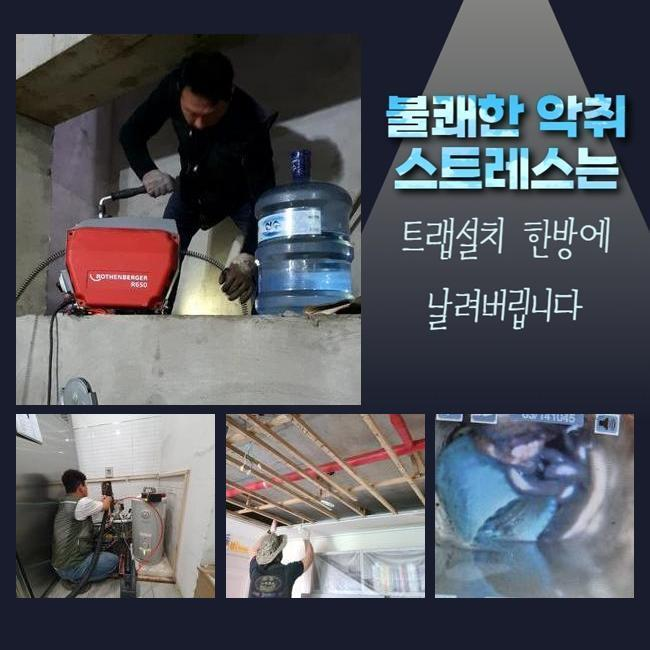
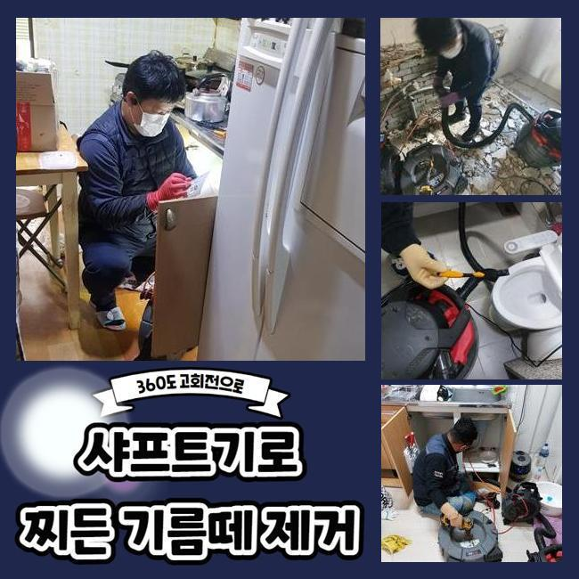
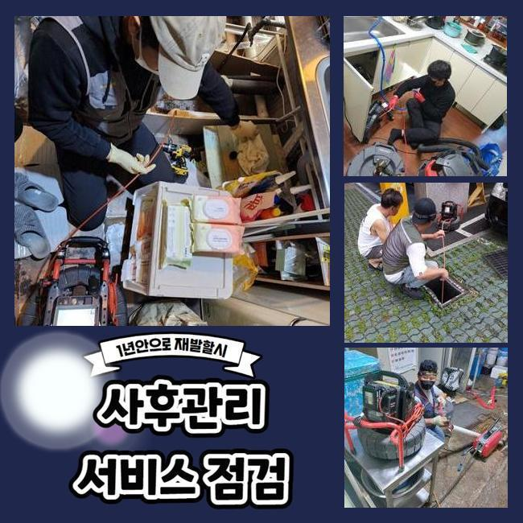
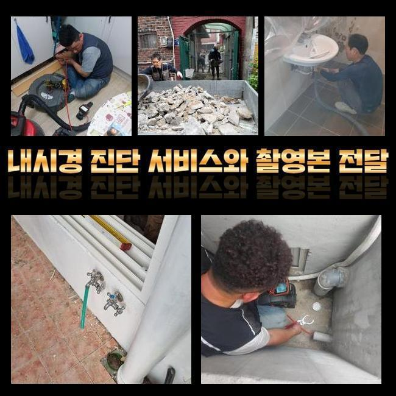
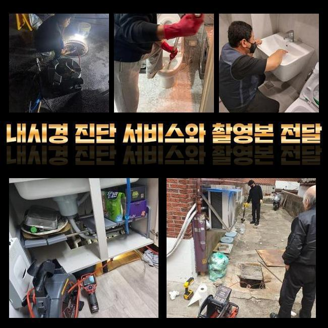
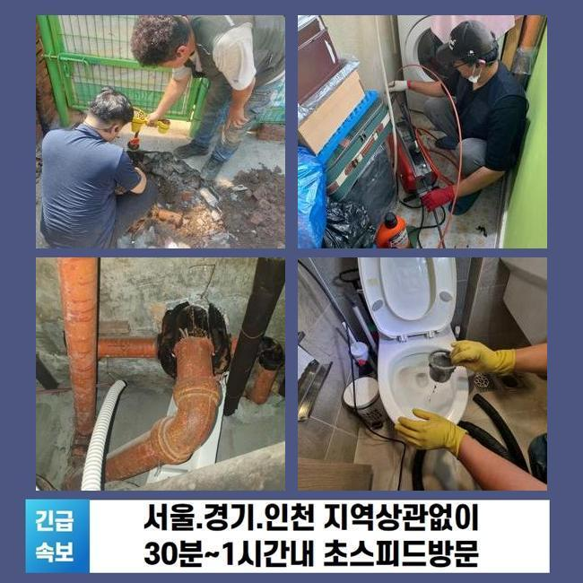
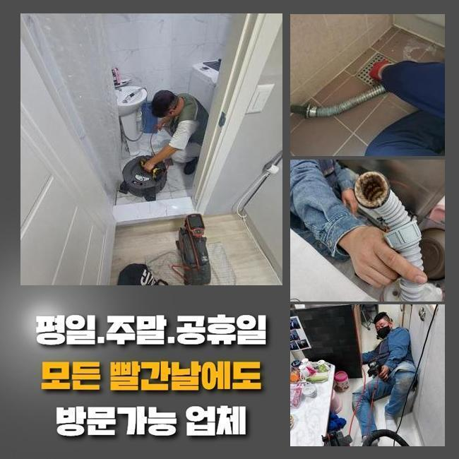

🏠 오성면세탁기배수구막힘 송북동 악취차단 부속수리
용인 하수구막힘 전문 시공 후기

📋 작업 개요
- 위치: 용인
- 서비스 유형: 하수구막힘, 배관막힘, 맨홀막힘, 집수정막힘, 누수수리, 역류해결, 뚫는업체, 배관청소, 고압세척, 악취차단
- 작업 일시: 2024. 10. 29. 15:02
- 업체명: 하수구수사대 (010-5615-2118)
🔍 문제 상황
오성면세탁기배수구막힘 송북동 악취차단 부속수리
우리가 머무른 장소에서 쓰는 물은 하수구 구멍마다 따로 독자 노선이 있는 게 아니고 한곳에 모여서 이동합니다
이동이 되다보면 점차 한 지점에서 뭉쳐서 집수정으로 향하여 배수가 이루어지는데 이와 같은 매커니즘을 좀 더 알기 쉽게 정리하자면 여러 호실에서 사용했던 하수가 혼합되는 중앙 배관이 있다는 사실은 어디서나 동일하겠죠
굵직한 두께의 배관이 마비되어버리면 세대 전반 중에서 몇몇 곳은 물이 넘치는 사고가 생겨요
이처럼 하수의 오류가 생기면 얼른 고치려고 시도하셔야 건물 속의 여러 호실에 관한 불편함이 생기지않게 막는 것입니다
서비스 요청자의 말씀에 따르면 중앙 배관을 정기적으로 청소를 해왔지만 그래도 1층에 위치한 곳에서 역류가 자주 나타난다고 하셨고 메인 관로의 검토를 저희측에 요구하셨던 겁니다
테스트와 관찰을 병행해보니 커다란 직경의 관까지 막힌 중증 사태로 보였습니다
불통이 될 정도로 차단된 배관을 수습해 보기 위해서는 건물 외부의 맨홀을 뚫어야만 나아갈 수 있을 듯 했어요
사이즈가 넓은 곳이라서 차량을 가까운 곳에 위치시키고 보유한 고압 세척기 운용을 시작하고 호스를 안으로 진입시켜서 노폐물을 빼내가는 정돈 과정을 통과하게 됩니다
일반적인 가정용 장비로는 도통 효과를 보기 힘든 경우들이 제법 있는데 어렵겠다고 판단되면 고압수를 써서 오염원에 직접 타격을 가해서 제거와 동시에 오래된 끈적해진 슬러지까지도 말끔히 정화를 해줄 수 있어요

🔎 원인 분석
💡 전문가 진단: 정밀 진단 장비를 사용하여 슬러지의 고착 여부를 판명하고 타격/세척 작업을 실시했습니다.
이처럼 거대한 규모의 하수관을 가정용으로 고안된 기기만으로 작업을 고수하는 건 효율도 나지 않을테지만 반복적으로 작업해야만 하니 빠른 문제 해결이 힘들기 때문에 고압세척기가 효과적이겠다 추정이 된다면 의뢰인분께도 상세히 안내드리고 해당 작업을 실시하고 있어요
무슨 장비를 쓰는지도 미리 동의를 구한 뒤에 프로세스를 실시합니다
막대한 물 분사 압력으로 발포하고 있으므로 단단하게 붙었던 이물들도 파편화가 되어버리면서 정상적으로 폐기됩니다
이물질들이 다 나가는 모습이 보일 때까지 기다리다 물줄기를 다음 대상을 할당하여 청소를 이어갔습니다
이렇게 여유시간을 두지 않고 끊임없이 수압을 유지하며 쏘다가 잘못 된다면 집 안의 하수구로 거꾸로 올라오고 맙니다
아니라면 시설물에 손상이 가거나 빈 틈이 생기게 되어 극심한 누수가 도래하는 등 문제점이 만들어지므로 세기 조절에 신경씁니다
장기간 세척해 주었지만 차단된 현재의 증세가 완화되지 않길래 내시경 전용 카메라를 넣어서 원인을 분석하고 봤습니다
배관의 구불한 곳에 더러운 노폐물들이 다수 숨어서 자라났단 것을 목격하게 됐어요!
완전히 꺾인 구조는 아니지만 곡선으로 꼬여있어서 물의 이동경로까지도 변동되며 거쳐가는 곳이기 때문에 오물들을 완전하게 척결하지 않는다면 동일한 막힘이 자꾸 생겨날 겁니다
샤프트 기기를 작동시켜서 벽과 혼연일체가 된 찌꺼기들의 처리과정을 수행했습니다
초기에는 내시경도 못들어갈만큼 여유공간도 없이 막혀있던 장면을 보았지만 조금씩 이물질을 걷어내 없애니까 더 밑으로 진출이 가능해졌어요

🔧 작업 과정
이처럼 심한 막힘이 있다면 한 하수구에서만 뚫음 업무를 담당하는 것을 넘어서 야외 실내 가리지 않고 기계를 도입해서 청소를 하는 것이 고효율 기능을 발휘해요
탁월한 샤프트의 힘을 빌려서 노폐물들을 부숴나갔고 옥외는 고압세척 공정을 맡아서 실시하여 초반에는 엄청나다고 느꼈던 오염부위를 순차적을 줄여가는 스타일로 작업을 했어요
이렇게 단단히 막혀버렸으니 가장 아래층의 실내에서 물이 넘쳐버리는 끔찍한 일들이 계속 나타날 수밖엔 없었겠죠
통수가 이뤄지지 않으면 어느 파트에 이물들이 남았는지를 끈기 있게 탐색을 해야만 합니다
방문 초반부에는 하수가 움직이지 못할만큼 막힘이 심각한 사태를 마주하고 있었고 내부에 오래 자리했었는지 돌덩이처럼 굳어져 버려서 다소 도전적인 현장으로 보였습니다
시간이 오래 걸릴거라 예상했던 상황 하에서도 장비 운용으로 막힌 쪽이 관통되고나서 이후에는 더욱 쾌적하게 청소를 이어가게 됐습니다
뚫어낸 이후에도 고압 세척을 다시 해서 거대 이물질을 타격하는 것이 아닌 내부에 벽체에 붙은 곰팡이 등을 말끔하게 만들어준다는 생각으로 호스를 다시 배치해서 물살을 발사하기 시작했어요
습도 높은 내부에서 장기간 화석처럼 굳건하게 변성되면서 갖가지 찌꺼기들이 동반하여 자라나는데 고압세척 과정으로 단번에 이런 부분도 처리가 됩니다
작은 입자들이 튀더라도 저희의 청소 장비를 이용해서 쾌적한 마무리 정돈까지도 담당하는 부분이므로 청소걱정 안하셔도 됩니다
고압수를 다방면으로 활용해서 하수구 속에 고여있던 골치아픈 문제 덩어리들을 전적으로 자취를 감추게 만들었습니다
내부 구조에서 방출한 수돗물도 정상 경로로 내려와서 집수정으로 진입되어서 모였고 혼탁했던 물도 맑아지는 모습을 발견하게 되었습니다
이처럼 깨끗한 하수만 계속해서 방출이 된다면 흐르는 물길의 전체가 쾌적하며 이번 하수관에 대한 청소가 완수된 것이라고 확신을 가져도 좋습니다!
청소하면서도 덩어리같은 이물질이 투출될 수 있다는 상황을 감안해서 뜰채를 이용해 신중한 업무를 이어나간 덕분에 말끔하게 끝낼 수 있었어요
야외 하수구까지도 수습해줄 업체를 물색하시고 계신다면 최우선적으로 어떻게 처리할지를 세부적으로 세세하게 알려주는 곳에다가 맡기시는 게 마음이 편하실 겁니다
모든 장치들을 갖추고 있는지 정보도 얻어야 하고 유연하게 조절할 수 있는 유연한 자세를 가졌는지를 꼼꼼히 따져봐야 합니다
폭발적인 힘을 소장하고 있는 장비이니만큼 위험도도 내포하고 있으니 잘 다스릴 줄 알아야 합니다
오래토록 유지되어온 만큼 들어간 물질의 장르도 다채로웠고 냄새까지도 고객님을 괴롭히고 있었던 곳이었어요


✅ 작업 완료
수도시설의 활용이 금지되는 점에서 오는 어려움도 있지만 주변시설이 더럽혀지는 등의 골치아픈 대형 사고까지도 연쇄적으로 이어지게 됩니다
공통적으로 설비 시설이 정상 노선에서 어긋난다면 건물 내의 많은 이들에게 어려움을 제공하게 됩니다
하수구의 안전한 사용도 중요하겠지만 대형 설비인만큼 깊은 곳까지의 정밀 검토를 정기적으로 실시해주셔야 안전한 건물을 유지하는데 이롭습니다
하수관이 고장나는 일이 도래한다면 단독주택 혹은 대형 건물이라도 마찬가지로 어떤 종류의 장소라도 가려서 받지 않으며 방문해서 고쳐드립니다
혼자서 임해보아도 도통 풀리지 않을 거라고 갑갑한 사태를 직면하시면 조치를 차일피일 지연시키지 말고 빠르게 연락만 주신다면 말끔히 복구해 드리겠습니다!




⚠️ 베란다 누수 및 방수 관리 방법
- ✅ 비가 많이 올 때 창틀 주변이나 아래층 천장에 얼룩이 생기는지 정기적으로 확인해 보세요.
- ✅ 우수관 주변 실리콘 마감이 들뜨거나 깨진 틈새가 있는지 손상 여부를 수시로 체크하세요.
- ✅ 베란다 바닥 타일의 줄눈(메지)이 소실되면 그 틈으로 물이 침투하여 누수가 유발됩니다.
- ✅ 누수 의심 증상 발견 시 방치하면 아래층 손실이 커지므로 즉시 전문가의 진단을 받으십시오.
💡 핵심 정리
- 확실한 장비 작업(내시경 점검 및 샤프트 스케일링)으로 원인을 뿌리 뽑습니다.
- 작업 후 1년 이내에 동일한 부위 재발 시 100% 무상 A/S 서비스를 보장합니다.
- 서울 · 경기 · 인천 전 지역에 24시간 언제든 긴급 출동할 수 있도록 항시 대기 중입니다.
❓ 자주 묻는 질문 (FAQ)
🚨 용인 하수구막힘 문제로 고민이신가요?
정확한 원인 진단과 확실한 시공으로 재발 없는 해결을 약속드립니다.
24시간 긴급 출동 | 서울 · 경기 · 인천 전지역 | 1년 내 재발 시 무상 A/S